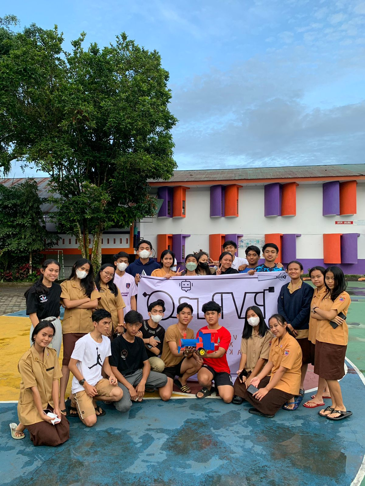

#Robotic, #Arduino, #C++, Electro
line follower carriage
The following is our final semester assignment assessment. The concept of designing a train for a line following robot is the right step that we took. By using an Arduino Uno as a microcontroller and implementing the C++ programming language, we achieved the level of sophistication required for this project.
03